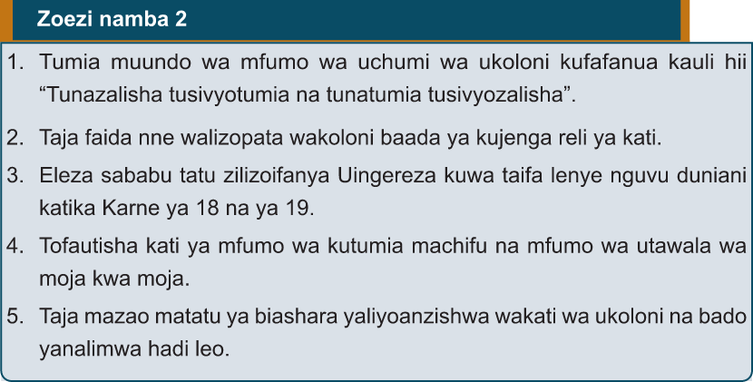

Zoezi namba 2
1.Tumia muundo wa mfumo wa uchumi wa ukoloni kufafanua kauli hii “Tunazalisha tusivyotumia na tunatumia tusivyozalisha”.
2.Taja faida nne walizopata wakoloni baada ya kujenga reli ya kati.
3.Eleza sababu tatu zilizofanya Uingereza kuwa taifa lenye nguvu duniani katika Karne ya 18 na ya 19.
4.Tofautisha kati ya mfumo wa kutumia machifu na mfumo wa utawala wa moja kwa moja.
5.Taja mazao matatu ya biashara yaliyooanzishwa wakati wa ukoloni na bado yanalimwa hadi leo.